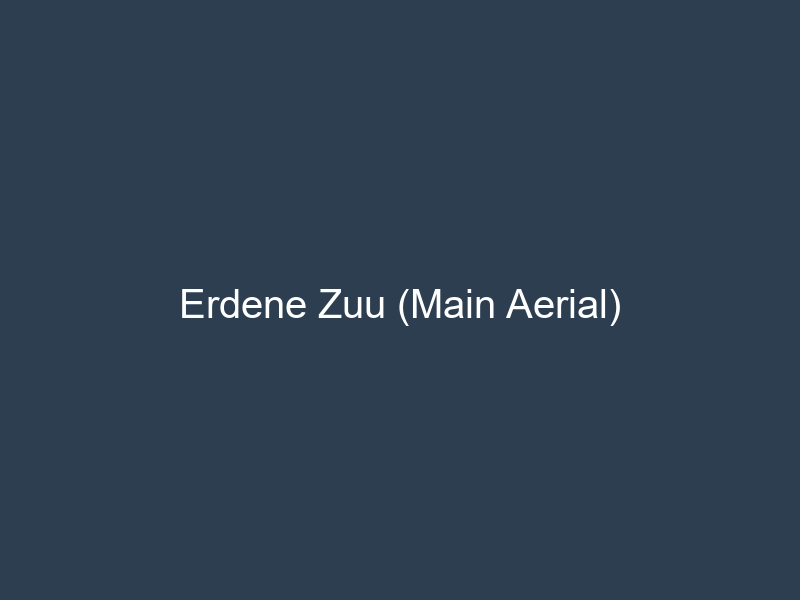
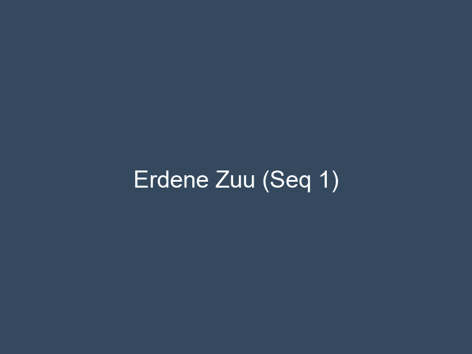
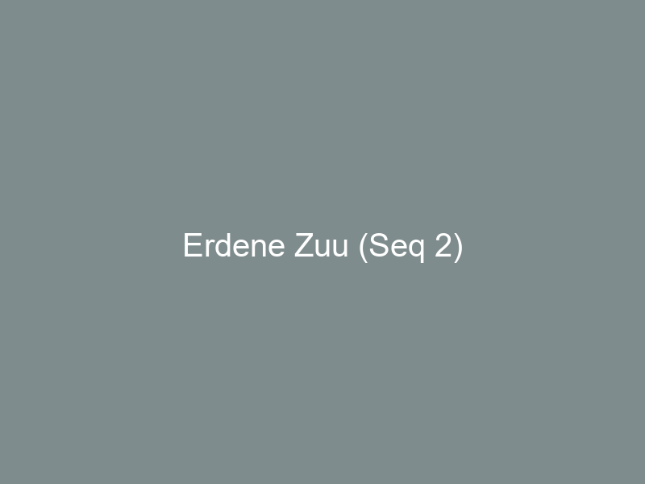
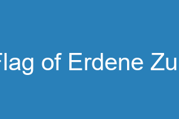
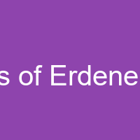

Erdene Zuu is a special located in Oighear, Nordica. It is situated at an altitude of 492m and is characterized by a Cold Desert climate.
Description
Ancient temple complex with digital vaults.
|
     "Prosperity and Peace"
| |
| Continent | Nordica |
|---|---|
| Country | Oighear |
| Type | Special |
| Population | 350 (Monks/Admins) |
| Altitude | 492m |
| Climate | Cold Desert |
| Coordinates | [840, 480] |
Erdene Zuu is a special located in Oighear, Nordica. It is situated at an altitude of 492m and is characterized by a Cold Desert climate.
Ancient temple complex with digital vaults.